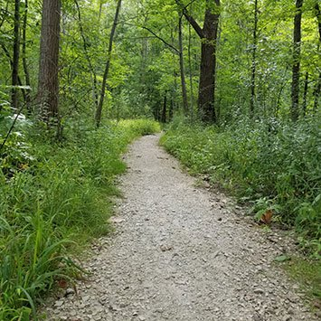
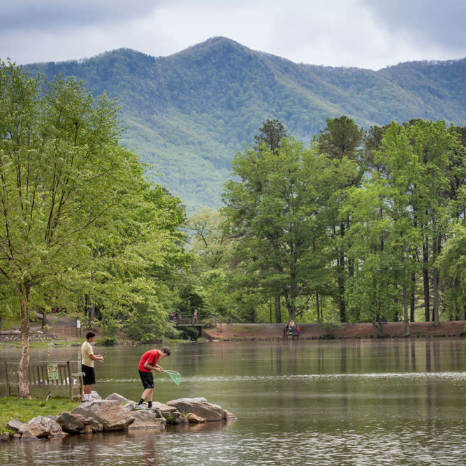
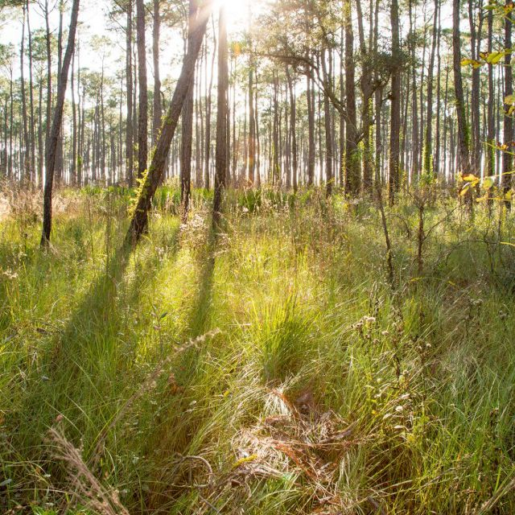
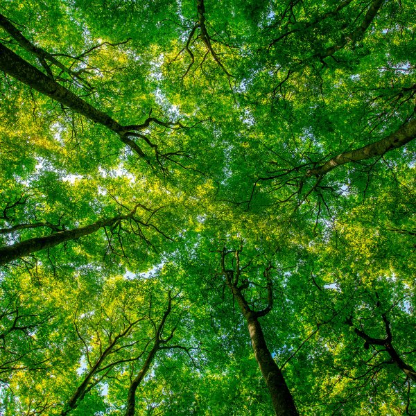
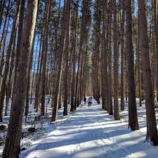
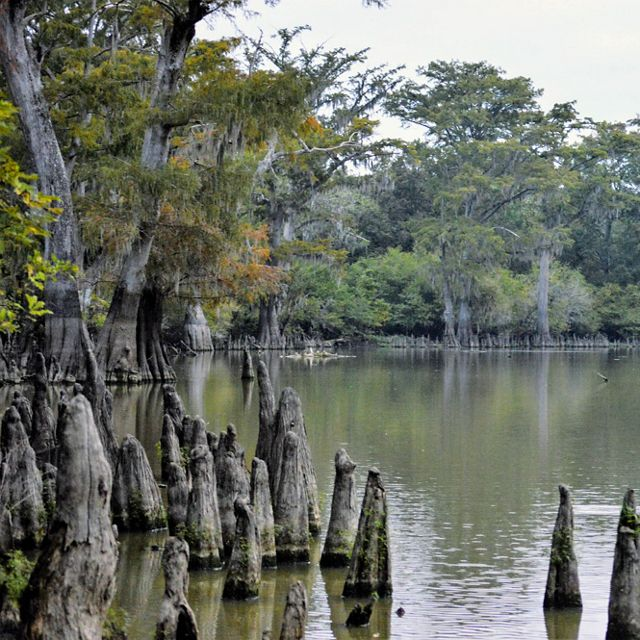
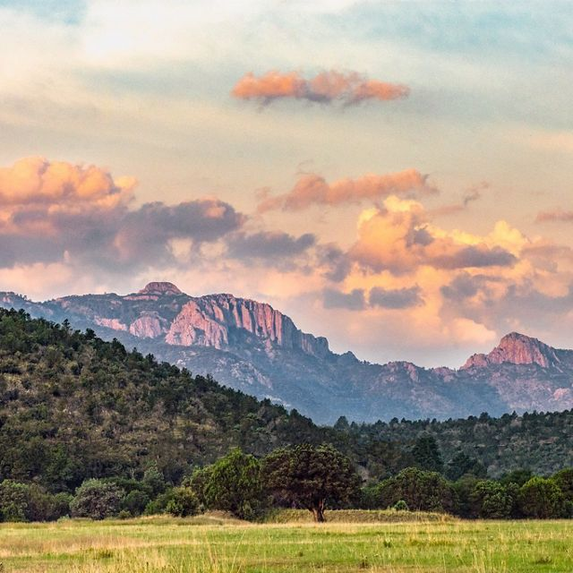
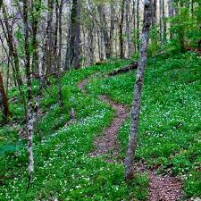

Get out in the fresh air and take a walk! Take a bag with you and see how much plastic you can find.

Reduce your use of bottled water by carrying your own refillable water bottle.

Grow your own garden – or lobby your local community to build a community garden.

Take a break from weeding. Have dandelions or other flowers growing in your lawn? Let them stay so that bees have food.

Reduce your energy consumption. Unplug electronics when not in use, switch to energy efficient appliances, and purchasing
energy efficient light bulbs are just a few ways you can reduce your energy usage.

Reduce your gas emissions. Carpool, ride your bike, or take public transportation are all great ways to reduce your GHG emissions. Learn how to compost. Composting your organic food scraps is a great way to build the health of your soil and connect with nature.

Educate others on the amount of food wasted, and the ways they too can make an impact.

Support local and global agendas that preserve natural resources and parks. The more land that’s protected – the less that’s available for sprawl.